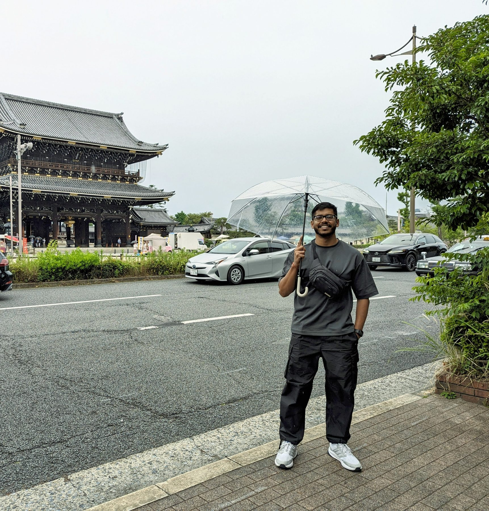

Research Fellow, AMD India
Embodied & Physical AI · Video Understanding · Spatial Reasoning
Hi, I am Shivam Singh, currently working as a Research Fellow in the AI Models & Agents team at AMD India. I have a Master's in Robotics and Deep Learning from IIIT Hyderabad. My research interests span Embodied and Physical AI — during my master's, my work was mostly in classical planning in indoor environments; currently I have inclined more towards video understanding and memory, which requires understanding the spatial and semantic information from monocular RGB videos and maintaining the memory of salient details that would help the agent answer queries related to the given environment.
I have always been excited about taking pictures and making videos. At the same time, I am fascinated by how the human mind works — making abstract representations of extremely complex things and fetching answers to our curiosity instantly. This is the main reason that motivates me to work in this field: it is the union of my interest in capturing the world and my curiosity about how intelligent systems work.